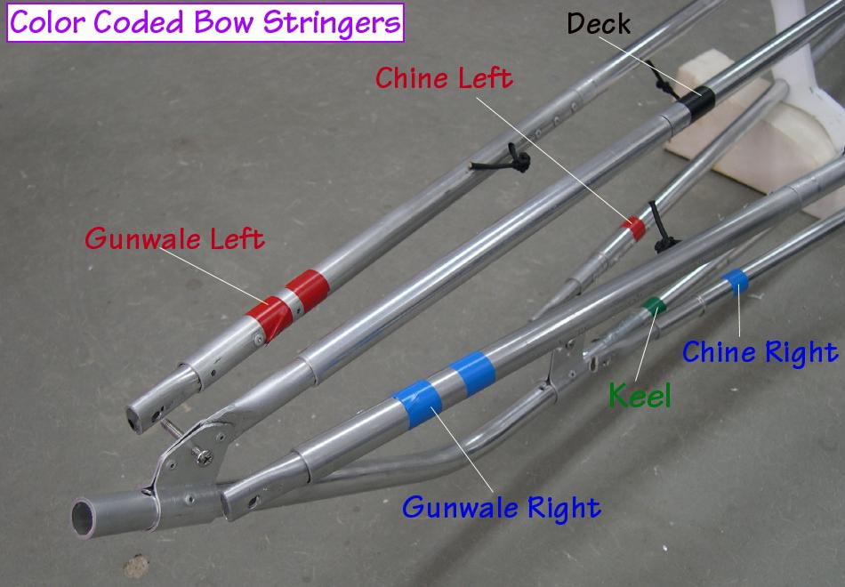

| Frame Assembly (2 of 8) | Menu Previous Page Next Page |
|
 Colored tape is used to identify the various stringers during assembly. Since the stringer sections are connected by shock cord, tape is only required at the bow. The only exception is the aft deckridge which is marked with white tape. |
|